Knowledge CenterIndustrial Knowledge for Better Automation Decisions.
Explore technology insights, project breakdowns, industry trends, and practical automation solutions covering warehouse automation, smart manufacturing, packaging technologies, and industrial machinery.
Learn from real-world applications and discover ideas that help improve efficiency, productivity, and operational performance.
SolutionsCost & ROIDesign GuidesIndustry ApplicationsTechnology InsightsProject PlanningBuyer GuidesBest PracticesTroubleshootingTrends & InnovationsCompliance & SafetyCase InsightsMaintenance & OperationsProductivity ImprovementSustainability & Energy Saving

For companies managing thousands of SKUs, investing in a mini load ASRS warehouse is often driven by one critical question:
How much automation inves...
Read article
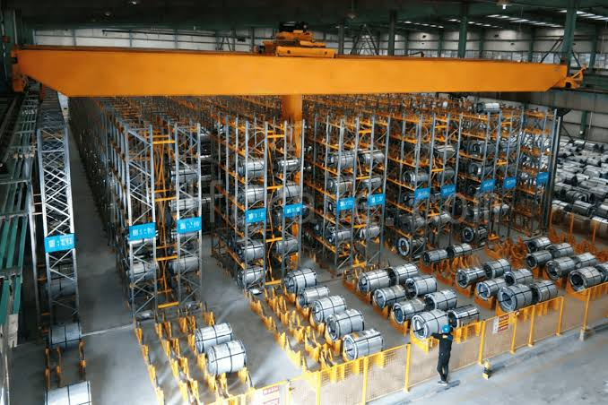
Cost & ROI2026-07-04
One of the first questions every warehouse automation buyer asks is:
"How much does a complete ASRS warehouse system actually cost?"
The answer depends o...
Read article
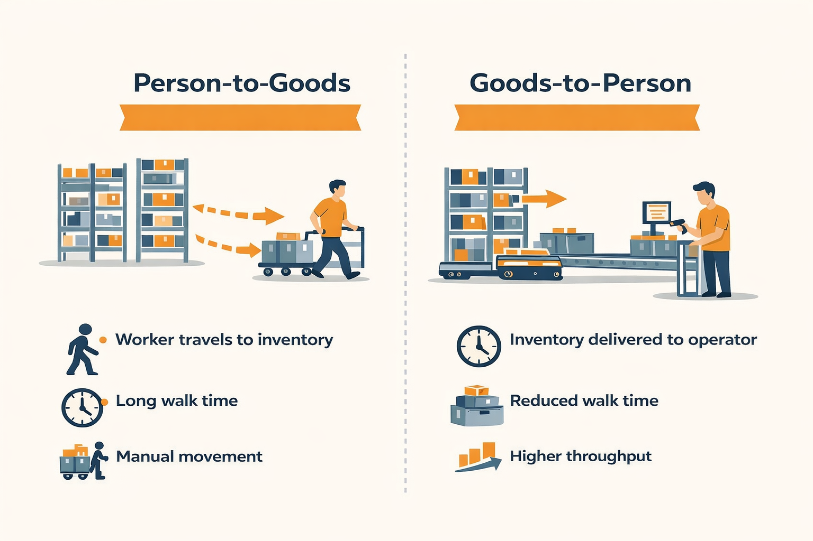
Project Planning2026-07-04
Traditional warehouses rely on workers walking through storage areas to pick products.
For high SKU operations, this model creates problems:
Low picking e...
Read article
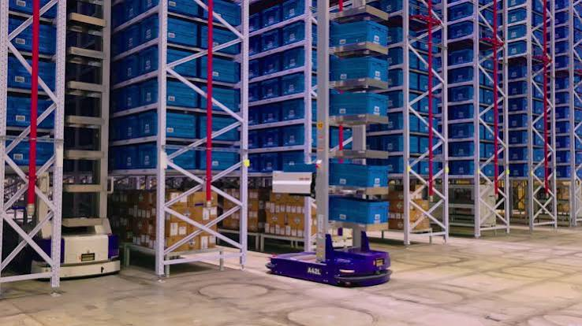
Cost & ROI2026-07-03
CTU (Case Transfer Unit) Goods-to-Person systems are one of the fastest-growing warehouse automation solutions for e-commerce, retail distribution, pharmac...
Read article
Technology Insights2026-07-01
In modern warehouse automation, three major technologies dominate the Goods-to-Person (GTP) landscape:
CTU (Case Transfer Unit) systems
AMR (Autonomous Mo...
Read article
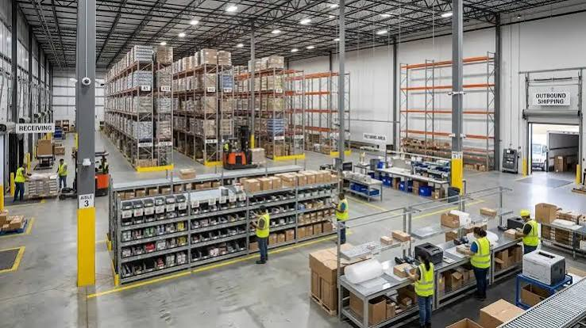
Technology Insights2026-07-01
E-commerce warehouses are under constant pressure to handle higher order volumes, faster delivery expectations, and increasing SKU complexity.
Traditional...
Read article
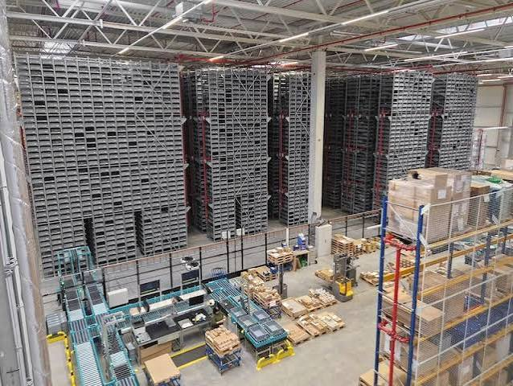
Design Guides2026-07-01
Designing an Automated Storage and Retrieval System (ASRS) is no longer just about selecting storage equipment. Modern warehouses require a fully integrate...
Read article

Cost & ROI2026-06-30
Chemical drum storage warehouses require specialized heavy-duty ASRS systems due to strict safety regulations, high load requirements, and hazardous materi...
Read article

Buyer Guides2026-06-29
As warehouse labor costs continue to rise and e-commerce order volumes increase, companies are actively exploring whether CTU (Case Transfer Unit) Goods-to...
Read article
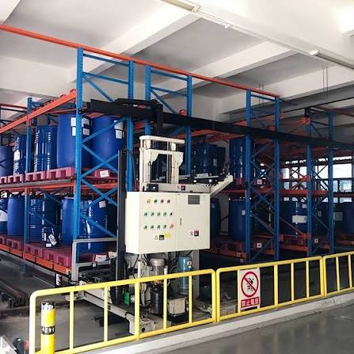
Design Guides2026-06-28
Designing a chemical storage warehouse is fundamentally different from designing a standard logistics facility.
It requires strict consideration of hazard...
Read article
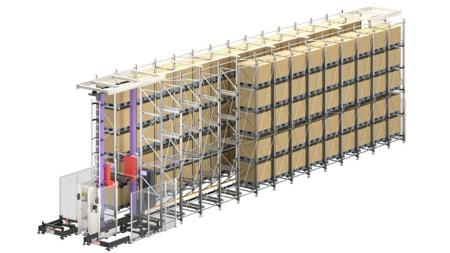
Design Guides2026-06-28
Designing an automated warehouse requires more than selecting equipment.
Companies must consider:
SKU characteristics
Storage strategy
Order patterns
Ware...
Read article
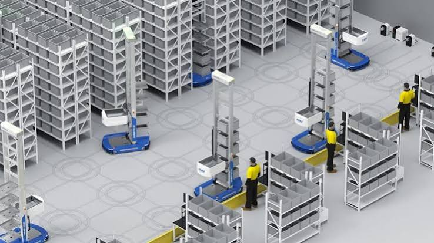
Design Guides2026-06-27
Designing a high-density CTU (Case Transfer Unit) Goods-to-Person warehouse is not just about adding robots—it is about building a fully optimized system c...
Read article
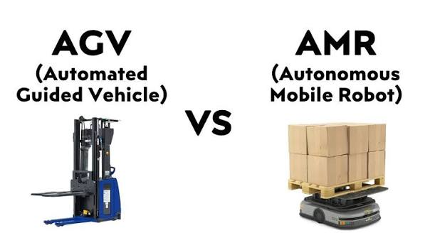
Solutions2026-06-26
As warehouse automation continues to evolve, buyers are often overwhelmed by the growing number of material handling technologies available. Among the most...
Read article
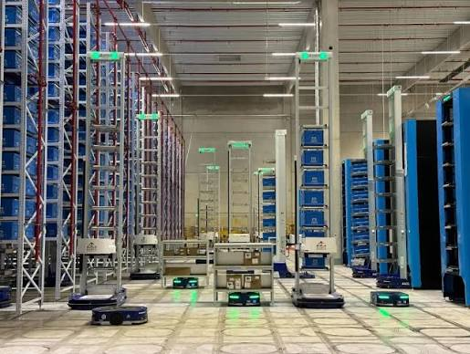
Cost & ROI2026-06-26
A fully automated warehouse system combining 33 ACR robots and 18 AMR robots represents a mid-to-large scale ASRS investment designed for high SKU, high th...
Read article
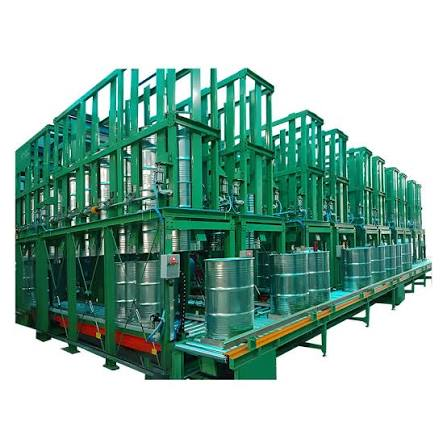
Technology Insights2026-06-26
Chemical drum handling is one of the highest-risk operations in industrial warehousing due to heavy loads, hazardous materials, and human-machine interacti...
Read article
Industry Applications2026-06-24
This article compares AMR (Autonomous Mobile Robots) and ACR (Automated Case-handling Robots) in modern ASRS warehouse systems, and explains how their hybr...
Read article
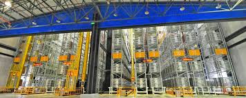
Buyer Guides2026-06-24
Chemical warehouses are among the highest-risk working environments in industrial logistics due to heavy loads, hazardous materials, and frequent forklift ...
Read article

Design Guides2026-06-24
Designing a high-throughput automated warehouse is not simply about adding more robots.
A true high-performance ASRS system requires careful coordination ...
Read article
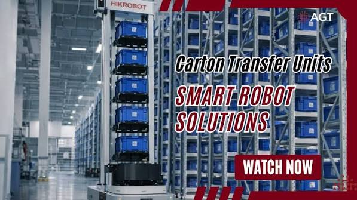
Troubleshooting2026-06-24
Modern warehouses—especially in e-commerce, retail distribution, and high-SKU logistics environments—face increasing operational pressure from labor shorta...
Read article
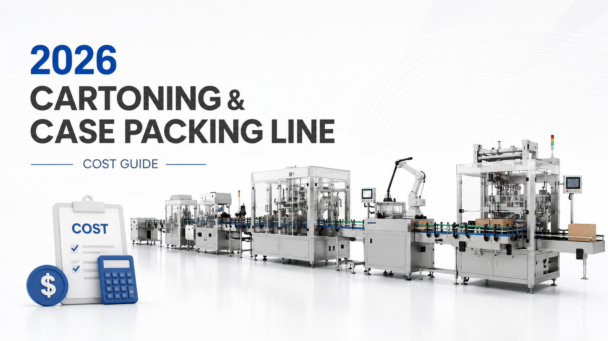
Cost & ROI2026-06-23
Planning to invest in a complete packaging automation system in 2026?
One of the most common questions manufacturers ask is:
“How much does a complete ca...
Read article
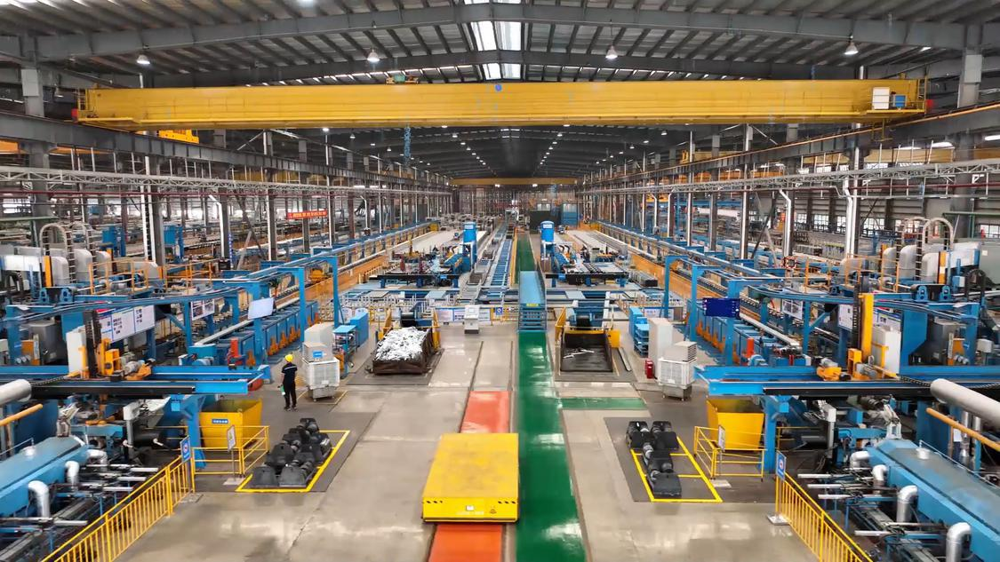
Case Insights2026-06-23
This article compares manual aluminum extrusion production lines with fully automated systems, focusing on efficiency, cost, labor, quality consistency, an...
Read article
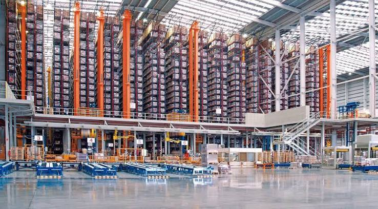
Technology Insights2026-06-22
Choosing the right warehouse automation technology is one of the most critical decisions in modern logistics design.
The three most commonly compared syst...
Read article
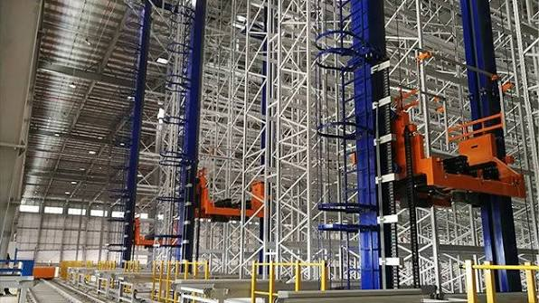
Project Planning2026-06-22
Chemical drum warehouse automation is a highly structured industrial process designed to safely manage hazardous materials, heavy loads, and strict complia...
Read article

Project Planning2026-06-22
This article explains the engineering and layout design principles behind a 129,000 storage location ASRS warehouse, including 8.6m high rack structures, m...
Read article

Industry Applications2026-06-22
This article explains the complete industrial tomato paste production process, from fresh tomato receiving to washing, crushing, sterilization, filling, pa...
Read article
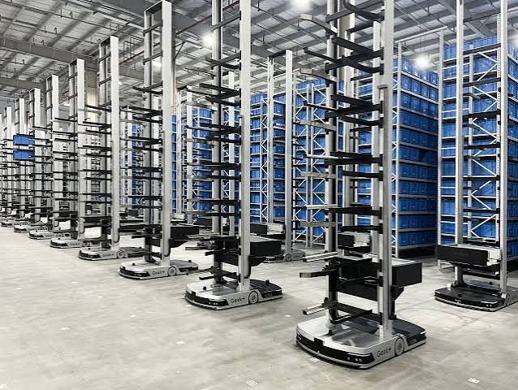
Trends & Innovations2026-06-22
Choosing the right automated storage technology is a major decision for warehouse planners.
Mini Load ASRS and Shuttle Systems both improve storage effici...
Read article
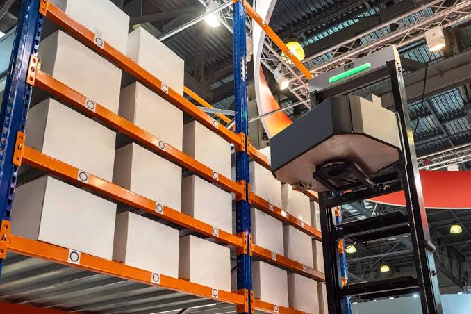
Industry Applications2026-06-21
One of the most critical questions in warehouse automation is:
👉 How fast is a CTU (Case Transfer Unit) Goods-to-Person system in real operations?
CTU s...
Read article
Design Guides2026-06-21
Designing a pharmaceutical packaging line is not simply about selecting machines.
A successful packaging system must balance production efficiency, produc...
Read article
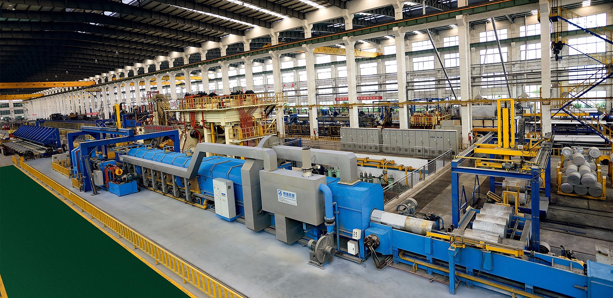
Design Guides2026-06-21
This guide explains how to design a high-efficiency aluminum extrusion factory layout for modern smart manufacturing environments.
It covers workflow plan...
Read article
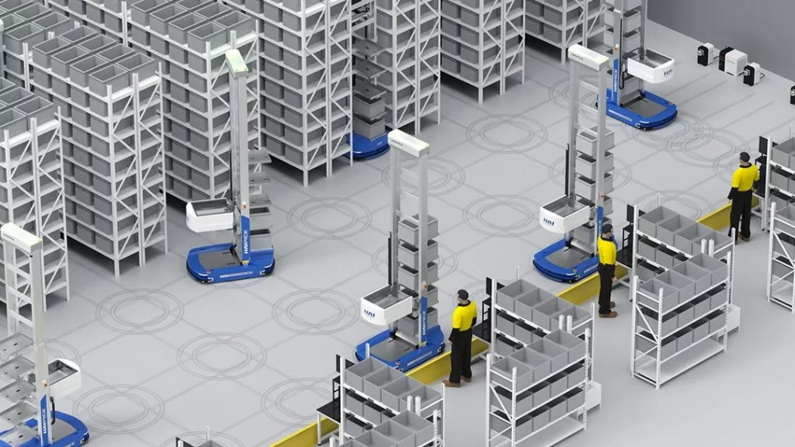
Cost & ROI2026-06-20
This article provides a detailed cost breakdown of a large-scale ASRS warehouse system using 108 AMRs and 46 ACR robots, explaining total investment range ...
Read article
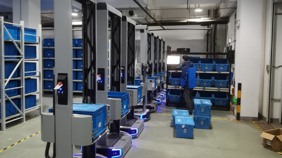
Buyer Guides2026-06-20
Warehouse efficiency is no longer measured only by storage capacity—it is defined by throughput performance, order accuracy, and system scalability.
This ...
Read article
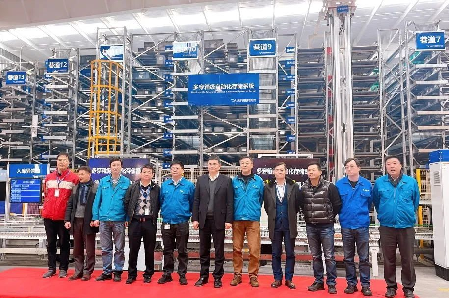
Trends & Innovations2026-06-20
Hazardous material storage requires the highest level of safety engineering, operational control, and regulatory compliance in industrial logistics.
Tradi...
Read article
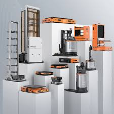
Case Insights2026-06-19
One of the most critical questions for warehouse automation investors is:
👉 Is a CTU (Case Transfer Unit) Goods-to-Person system truly worth the investme...
Read article
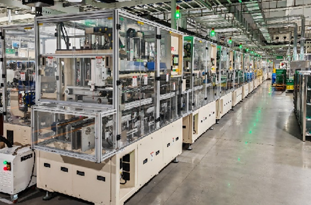
Technology Insights2026-06-19
This smart manufacturing case study examines how a fully automated motor assembly line transformed traditional manual production into an integrated, high-e...
Read article
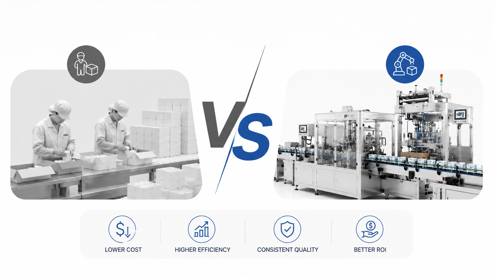
Buyer Guides2026-06-19
Many manufacturers planning production upgrades ask the same question:
Should we continue using manual packaging, or invest in automated cartoning systems...
Read article
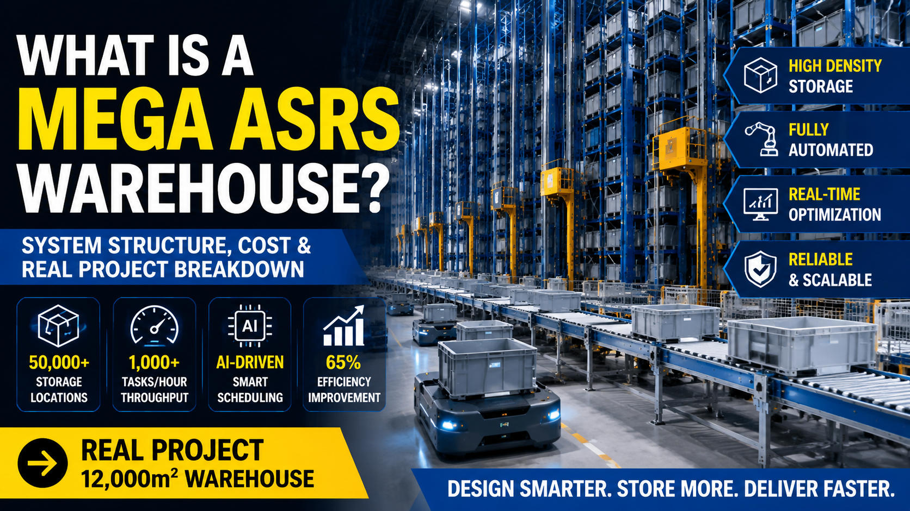
Solutions2026-06-19
A Mega ASRS warehouse is a large-scale automated storage system designed to manage massive SKU volumes with ultra-high density and intelligent logistics co...
Read article
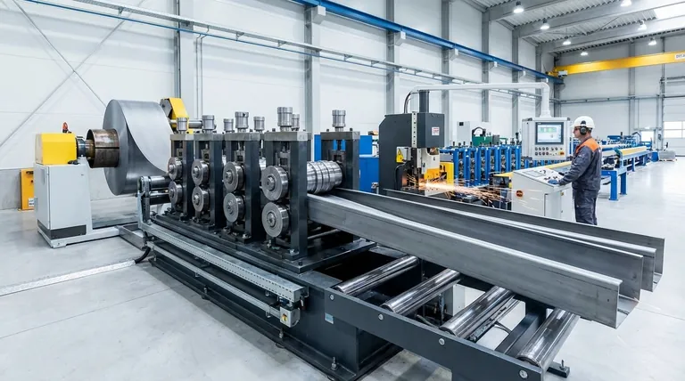
Technology Insights2026-06-19
This article provides a complete breakdown of all essential machines required in an aluminum extrusion production line, from raw material heating to final ...
Read article
Trends & Innovations2026-06-18
This article explains the Goods-to-Person (GTP) automation model used in modern ASRS warehouses, showing how it replaces manual picking with automated “goo...
Read article
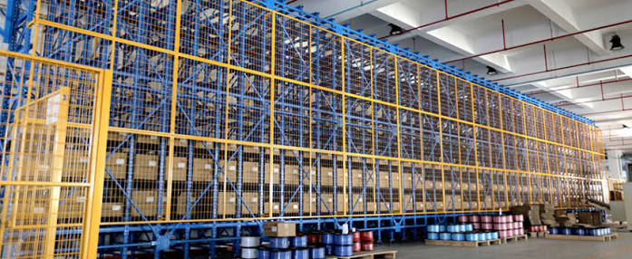
Troubleshooting2026-06-18
Handling 1-ton chemical drums or industrial pallet loads is one of the most demanding challenges in warehouse automation.
Traditional forklift systems str...
Read article
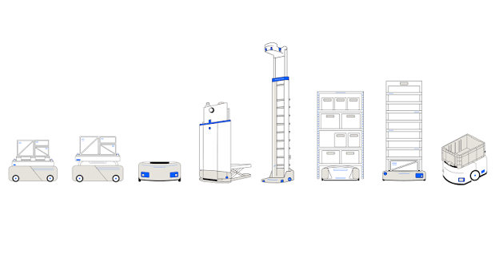
Troubleshooting2026-06-18
A modern automated warehouse system is not a collection of independent robots—it is a fully synchronized logistics execution ecosystem.
This case explains...
Read article
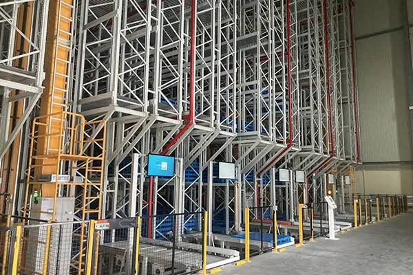
Technology Insights2026-06-18
Warehouse throughput has become one of the most important performance indicators for modern logistics operations. As order volumes continue to rise and lab...
Read article
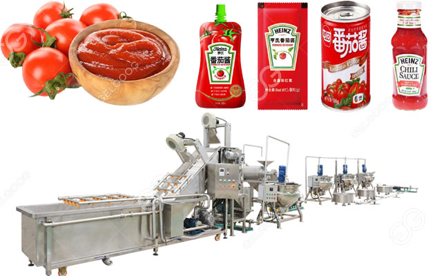
Cost & ROI2026-06-18
This article provides a detailed cost breakdown of building a fully automated tomato processing plant, including equipment investment, factory setup, autom...
Read article
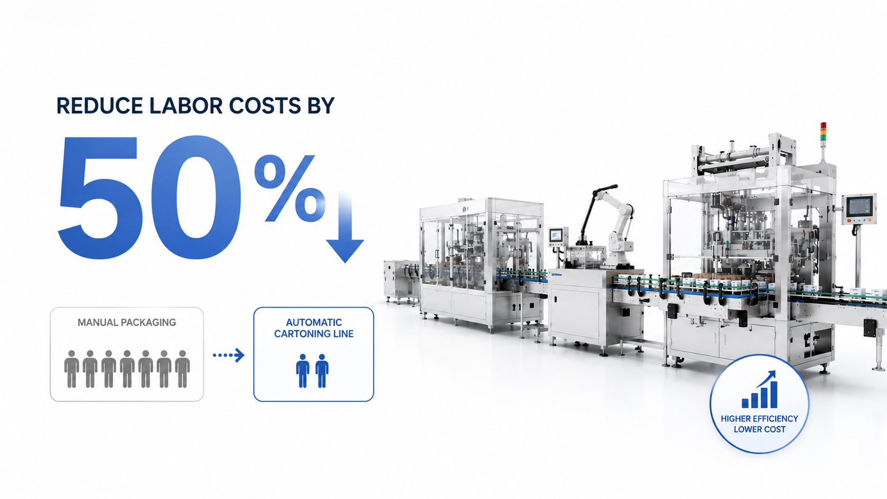
Cost & ROI2026-06-17
Reducing labor costs has become one of the biggest challenges for pharmaceutical, beauty, healthcare, and consumer product manufacturers.
As labor expense...
Read article
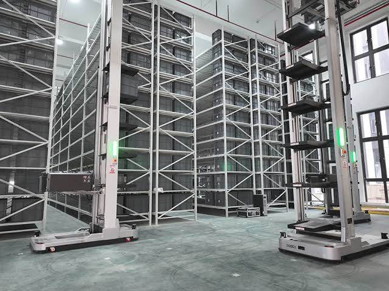
Industry Applications2026-06-17
Understanding how a CTU (Case Transfer Unit) Goods-to-Person warehouse system works is essential for evaluating automation feasibility and operational effi...
Read article
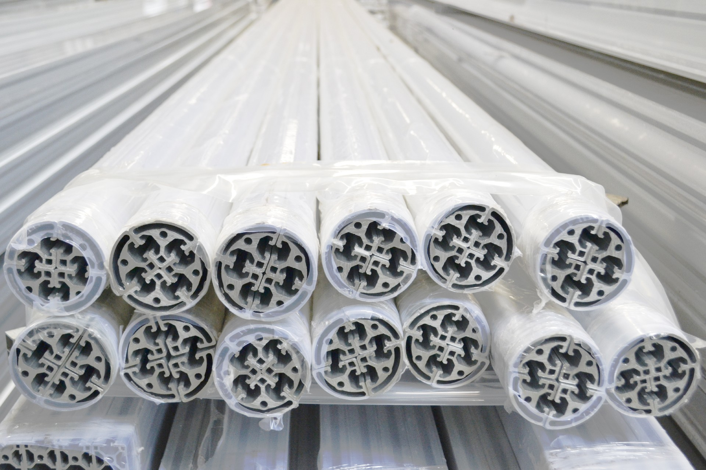
Industry Applications2026-06-17
This article explains how aluminum extrusion technology improves material strength, structural precision, and product performance through controlled therma...
Read article
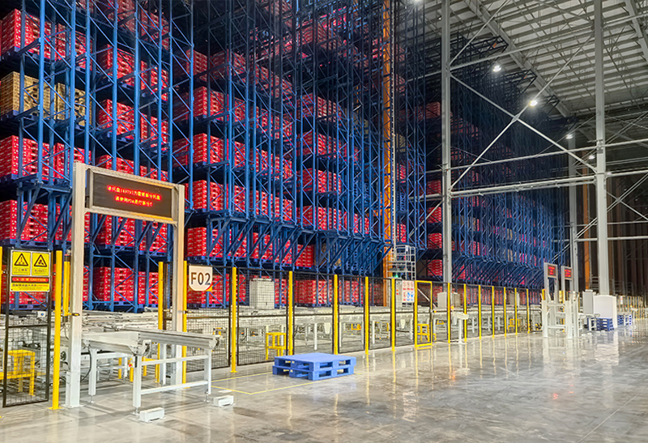
Design Guides2026-06-17
This project explains how a 12,000㎡ large-scale automated warehouse manages over 50,000 storage locations using an integrated ASRS system.
Through AI sche...
Read article
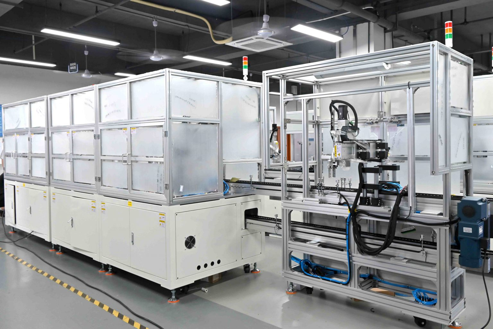
Buyer Guides2026-06-17
Quality control in motor assembly has traditionally relied on manual visual inspection, a method that is inherently subjective, inconsistent, and increasin...
Read article
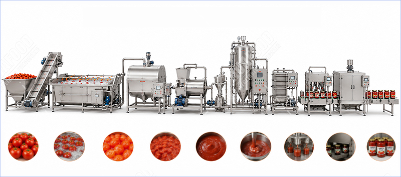
Buyer Guides2026-06-17
This article provides a complete breakdown of all machines required in a fully automated tomato paste production line, from raw tomato receiving to washing...
Read article
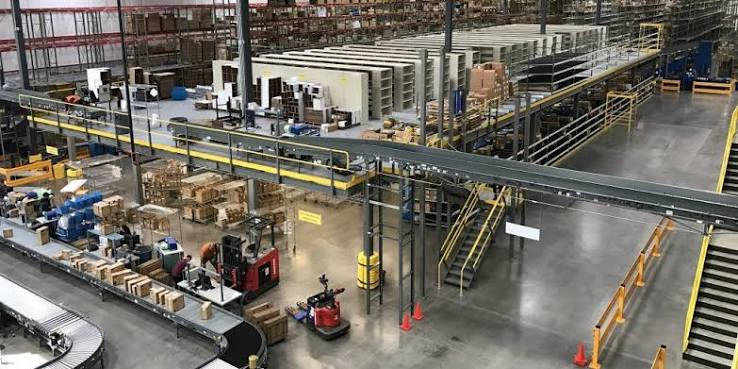
Buyer Guides2026-06-16
E-commerce warehouses and high-SKU distribution centers face extreme operational complexity due to fast-changing demand, large product variety, and high or...
Read article
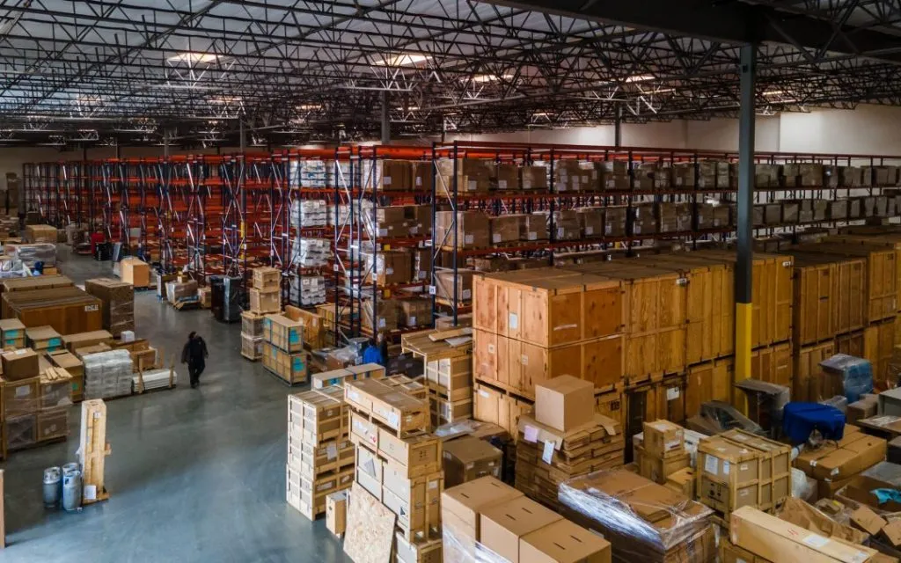
Design Guides2026-06-16
This article explains how WMS (Warehouse Management System) and MES (Manufacturing Execution System) integration enables real-time smart warehouse operatio...
Read article
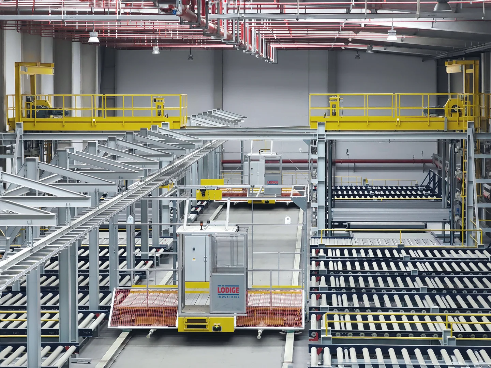
Productivity Improvement2026-06-16
Chemical industry warehouse automation is no longer just an efficiency upgrade—it is a strategic investment decision involving safety, cost structure optim...
Read article

Design Guides2026-06-15
This guide explains how modern ASRS warehouse design integrates AI scheduling systems to achieve over 1,000 operations per hour in large-scale logistics en...
Read article
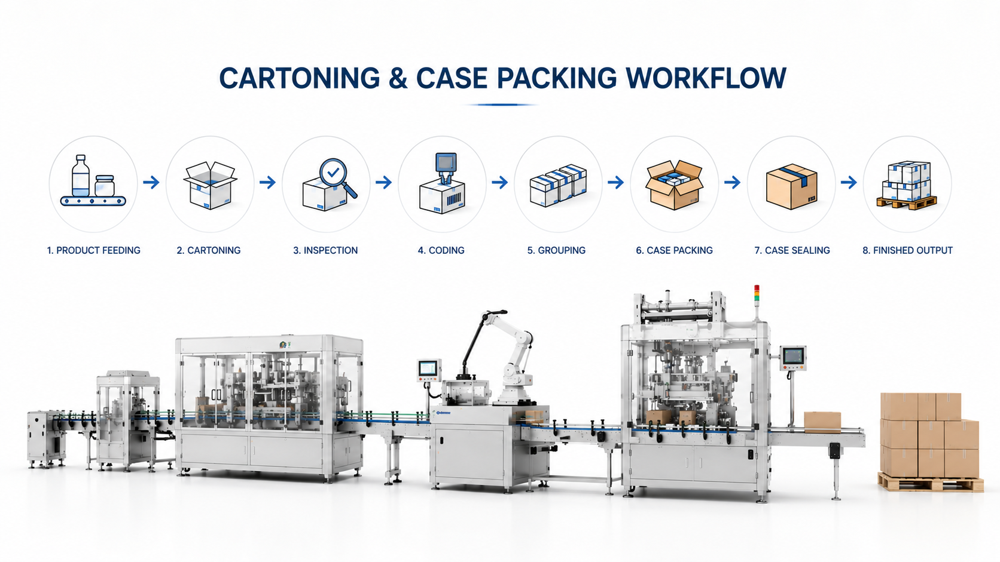
Technology Insights2026-06-15
A complete cartoning and case packing line combines multiple packaging processes into one automated workflow.
Many manufacturers understand the benefits o...
Read article
Cost & ROI2026-06-15
This article explains how modern aluminum extrusion production lines achieve significant energy savings through automation, process optimization, and intel...
Read article

Best Practices2026-06-15
The manufacturing landscape for electric motors and automotive electronics is undergoing a fundamental transformation driven by automation, electrification...
Read article
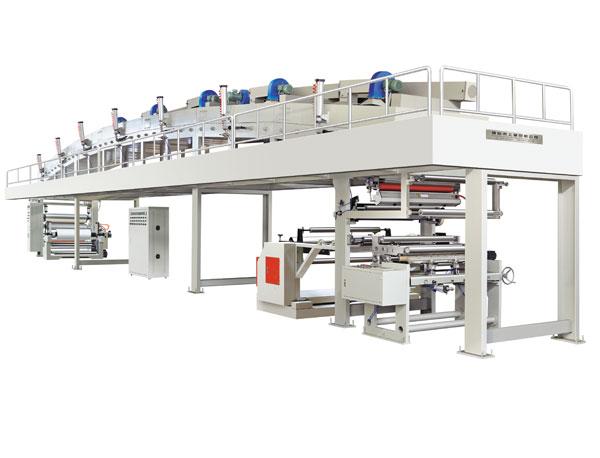
Solutions2026-06-15
The rapid growth of electric vehicles (EVs), energy storage systems (ESS), and consumer electronics has made lithium battery manufacturing one of the faste...
Read article
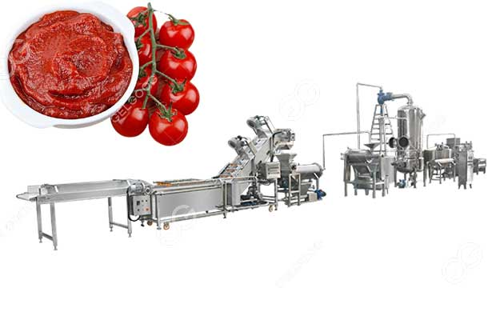
Buyer Guides2026-06-15
This article compares manual and fully automated tomato processing lines in terms of cost, efficiency, labor requirement, food safety, production stability...
Read article
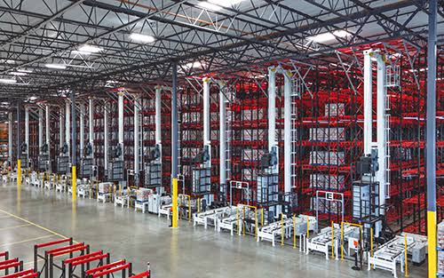
Trends & Innovations2026-06-14
Large logistics centers face increasing operational pressure due to rising order volumes, SKU complexity, and labor instability.
Traditional warehouse sys...
Read article

Buyer Guides2026-06-14
This article explains how high-density warehouse design using 8.6m racking systems significantly increases storage capacity, improves vertical space utiliz...
Read article

Industry Applications2026-06-14
As global demand for disposable food packaging, takeaway beverages, and sustainable paper products continues to grow, paper cup manufacturers face increasi...
Read article
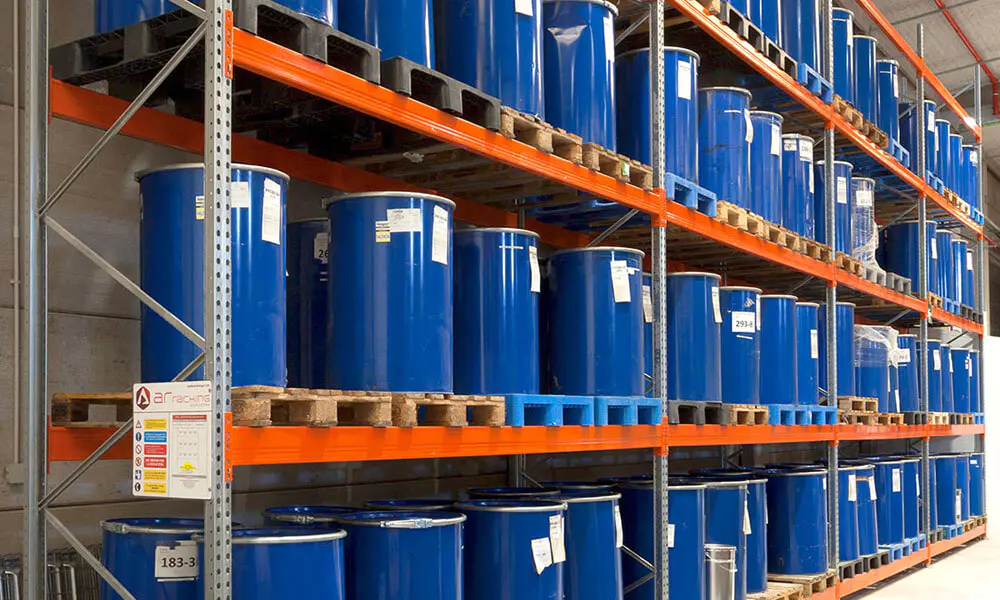
Compliance & Safety2026-06-14
Chemical warehouses traditionally rely on manual forklift operations, human-driven storage systems, and labor-intensive processes.
However, with increasin...
Read article

Trends & Innovations2026-06-14
Modern smartphones, televisions, tablets, laptops, automotive displays, and wearable devices all rely on advanced optical films to achieve superior brightn...
Read article
Industry Applications2026-06-13
The beauty and cosmetics industry is evolving rapidly.
Manufacturers face increasing pressure from shorter product life cycles, frequent SKU changes, risi...
Read article
Technology Insights2026-06-13
This article explains how aseptic filling systems improve food safety, extend shelf life, and enhance product stability in tomato paste and tomato-based fo...
Read article

Industry Applications2026-06-13
、Manufacturing industries such as automotive and electronics are under increasing pressure to reduce labor dependency, improve production speed, and increa...
Read article
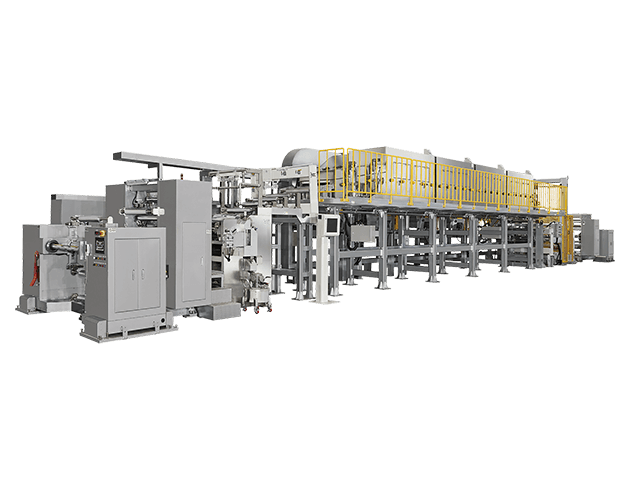
Buyer Guides2026-06-13
Medical device coating technology plays a critical role in modern healthcare by enhancing the performance, safety, and effectiveness of medical devices.
F...
Read article
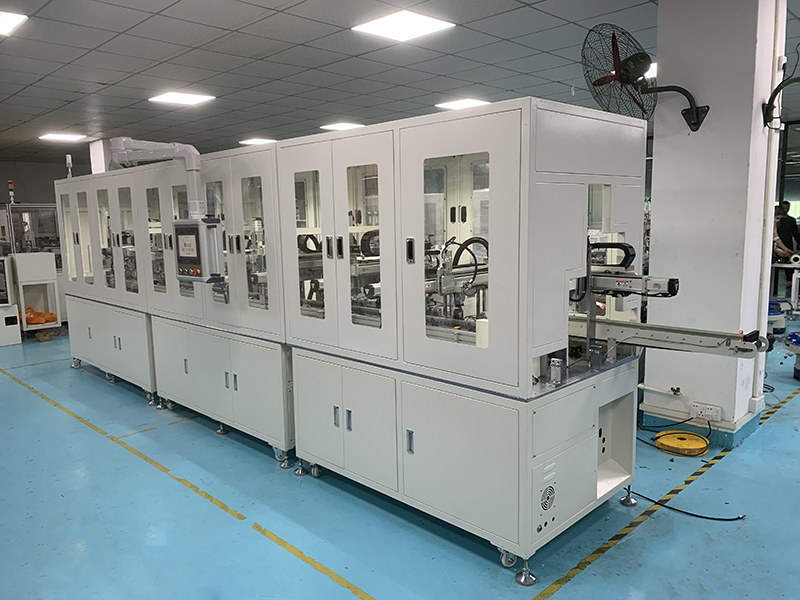
Technology Insights2026-06-13
Manufacturing leaders evaluating automation investments face a critical question: does the financial return justify the capital expenditure? This blog post...
Read article

Technology Insights2026-06-13
This article explains how smart aluminum factories integrate industrial IoT, automation systems, and real-time data analytics to improve aluminum extrusion...
Read article

Buyer Guides2026-06-13
This case study explains how a mega-scale ASRS warehouse automation system significantly reduced labor dependency while increasing operational efficiency b...
Read article
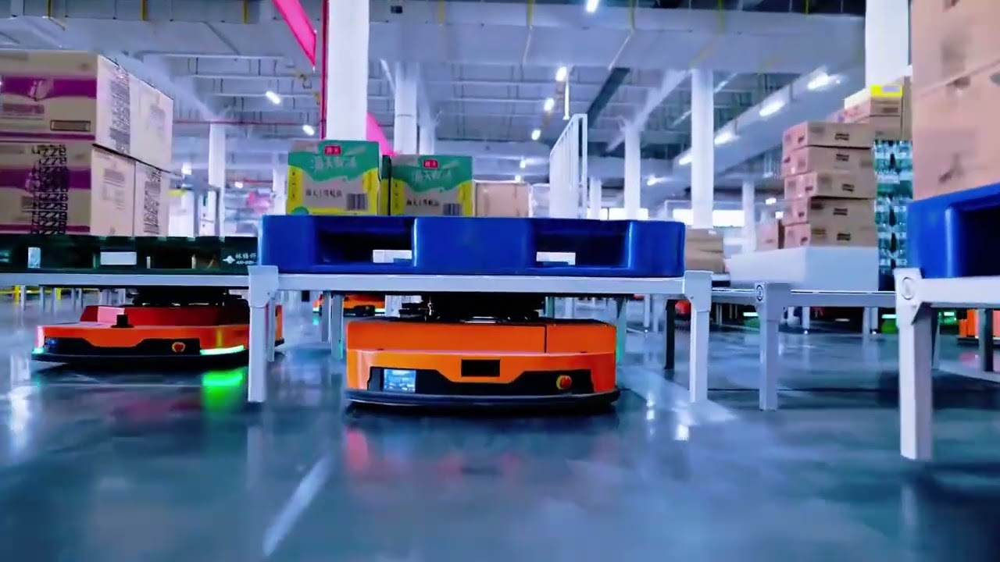
Industry Applications2026-06-12
This article explains how an AMR fleet management system coordinates 108 autonomous mobile robots in real time within a large-scale ASRS warehouse, using A...
Read article
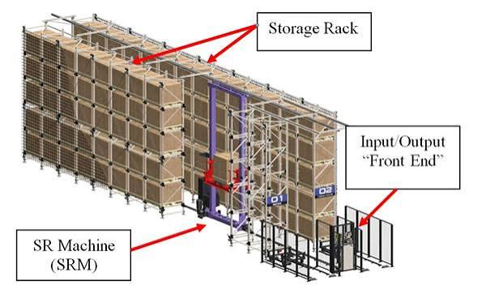
Buyer Guides2026-06-12
An Automated Storage and Retrieval System (ASRS) is much more than a high-rise warehouse filled with robots. It is an integrated logistics ecosystem where ...
Read article

Productivity Improvement2026-06-12
High-speed electronics packaging lines are critical for semiconductor, LED, and precision electronics manufacturing industries where large volumes of Reel ...
Read article
Solutions2026-06-12
Millions of disposable paper cups are produced daily for coffee shops, restaurants, takeaway services, beverage companies, and food packaging industries. W...
Read article

Technology Insights2026-06-12
Modern warehouse automation systems are often described using three key terms: ACR, AMR, and ASRS.
However, these terms do not represent competing technol...
Read article
Trends & Innovations2026-06-11
Pharmaceutical manufacturers operate in highly regulated environments where packaging accuracy, product traceability, and production efficiency directly af...
Read article
Project Planning2026-06-11
Implementing an automated motor assembly line is one of the most significant capital investments a manufacturing operation can make—and one of the most com...
Read article
Productivity Improvement2026-06-11
This article explains how to upgrade existing aluminum extrusion production lines without replacing the entire system.
It focuses on industrial automation...
Read article
Technology Insights2026-06-11
This article explains how a high-density ASRS storage system enables warehouses to efficiently manage over 45,000 SKUs within a single intelligent warehous...
Read article

Technology Insights2026-06-11
Modern electronics manufacturing requires full traceability from production to final packaging. MES (Manufacturing Execution System) plays a critical role ...
Read article
Productivity Improvement2026-06-11
Roll-to-Roll (R2R) coating technology has become one of the most important manufacturing methods for producing advanced materials at industrial scale.
Fro...
Read article
Productivity Improvement2026-06-11
This article explains how smart food factories integrate industrial IoT, automation systems, and real-time data analytics to significantly improve tomato p...
Read article

Industry Applications2026-06-11
Reel & Tray packaging automation is a critical system in modern electronics manufacturing that enables fully automated handling, labeling, vacuum sealing, ...
Read article
Technology Insights2026-06-11
Vacuum packaging plays a key role in protecting semiconductor and electronic components from moisture damage, oxidation, and contamination. This blog expla...
Read article
Cost & ROI2026-06-10
This article provides a structured ROI analysis of ASRS warehouse automation systems, explaining why automated warehouses achieve faster payback (18–36 mon...
Read article
Troubleshooting2026-06-10
Coating quality directly affects the performance, appearance, reliability, and yield of products across industries such as lithium batteries, optical films...
Read article
Trends & Innovations2026-06-10
The rapid growth of global e-commerce has created unprecedented pressure on warehouse operations, requiring faster order fulfillment, higher SKU density, a...
Read article
Buyer Guides2026-06-10
Investing in a 33 ACR + 18 AMR automated warehouse system is a strategic decision that goes far beyond equipment procurement.
It directly impacts long-ter...
Read article

Technology Insights2026-06-10
In modern paper cup manufacturing, product quality consistency is one of the most critical requirements for food packaging industries.
Even minor defects ...
Read article
Solutions2026-06-09
This article explains how automated packaging and palletizing systems significantly reduce labor costs, improve production efficiency, and enhance logistic...
Read article
Buyer Guides2026-06-09
Manufacturers increasingly invest in packaging automation to improve production output and reduce operational costs.
However, one of the most common quest...
Read article
Trends & Innovations2026-06-09
The motor manufacturing industry is undergoing a fundamental transformation driven by Industry 4.0 technologies. From digital twins and AI-powered vision i...
Read article
Troubleshooting2026-06-09
This article explains how smart logistics system design integrates AI warehouse scheduling and ASRS automation systems to achieve zero-delay warehouse oper...
Read article

Technology Insights2026-06-09
Modern warehouse automation is no longer about purchasing individual robots or installing an Automated Storage and Retrieval System (ASRS). The real value ...
Read article
Cost & ROI2026-06-08
Selecting the right coating machine is one of the most important decisions in any coating production project.
Whether manufacturing lithium batteries, opt...
Read article
Trends & Innovations2026-06-08
This article explains how ASRS (Automated Storage and Retrieval Systems) improve logistics efficiency, inventory accuracy, and supply chain performance in ...
Read article

Productivity Improvement2026-06-08
Pharmaceutical warehouses require extremely high standards in accuracy, traceability, and environmental control due to strict regulatory compliance and pro...
Read article

Troubleshooting2026-06-08
This case study explains a large-scale ASRS smart warehouse system with 129,000 storage locations, showing how automation transforms supply chain efficienc...
Read article
Buyer Guides2026-06-08
In food and beverage packaging industries, hygiene is one of the most critical quality requirements. Paper cups are widely used for coffee, tea, soft drink...
Read article

Buyer Guides2026-06-06
Modern electronics manufacturing factories require fully integrated end-to-end automation systems to handle Reel and Tray packaging with high precision, fu...
Read article
Troubleshooting2026-06-06
Food and beverage logistics require strict temperature control, fast turnover, and zero spoilage tolerance.
ASRS (Automated Storage and Retrieval Systems)...
Read article
Buyer Guides2026-06-06
Investing in a fully automated ASRS (Automated Storage and Retrieval System) is one of the most significant capital decisions a manufacturer, logistics pro...
Read article
Cost & ROI2026-06-06
Investing in a paper cup manufacturing line is a strategic decision for packaging manufacturers, beverage companies, and industrial investors.
The total c...
Read article
Solutions2026-06-06
Investing in an automated packaging line is not simply a machine purchase.
It is a long-term manufacturing decision that affects production efficiency, op...
Read article
Project Planning2026-06-05
This article helps food manufacturers and investors compare different tomato-based production systems, including tomato paste, juice, sauce, and canned foo...
Read article

Buyer Guides2026-06-05
Vacuum sealing failure is one of the most critical quality risks in Reel and Tray packaging for semiconductor, LED, and precision electronics manufacturing...
Read article
Solutions2026-06-04
Manufacturing companies are under increasing pressure to produce more with fewer resources. Rising labor costs, SKU diversification, shorter production cyc...
Read article
Best Practices2026-06-03
Traditional warehouse systems rely heavily on manual labor, forklifts, and static shelving structures, which limit efficiency, scalability, and accuracy.
...
Read article
Buyer Guides2026-06-03
Selecting a paper cup production line is a critical decision for manufacturers, investors, and packaging companies.
Different production lines vary signif...
Read article
Trends & Innovations2026-06-01
Warehouse bottlenecks are one of the biggest obstacles preventing manufacturers, logistics providers, and distribution centers from achieving higher produc...
Read article

Buyer Guides2026-06-01
The cost of a fully automatic Reel & Tray packaging line depends on automation level, MES integration, vacuum sealing system design, and production speed r...
Read article

Industry Applications2026-05-14
The future of Reel & Tray packaging is moving toward fully unmanned smart factories powered by MES integration, AI-based defect detection, and closed-loop ...
Read article